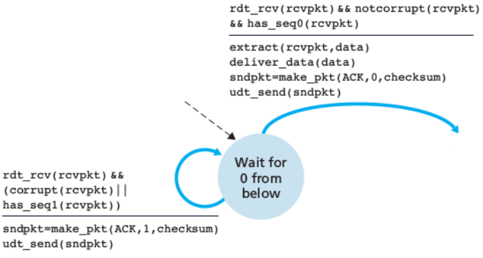
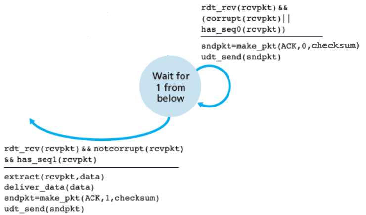

Finite State Machine (FSM) adalah sebuah metodologi perancangan sistem kontrol yang menggambarkan tingkah laku atau prinsip kerja sistem dengan menggunakan tiga hal berikut: State (keadaan), Event (kejadian), dan Action (aksi).
Pada satu saat dalam periode waktu yang cukup signifikan, sistem akan berada pada salah satu state yang aktif. Sistem dapat beralih atau bertransisi menuju state lain jika mendapatkan masukan atau event tertentu, baik yang berasal dari perangkat luar atau komponen dalam sistem itu sendiri. transisi keadaan umumnya juga disertai oleh aksi yang dilakukan oleh sistem ketika menanggapi masukkan yang terjadi. Aksi yang dilakukan tersebut dapat berupa aksi yang sederhana atau melibatkan rangkaian proses yang relatif kompleks.
Diagram tersebut memperlihatkan FSM dengan dua buah state dan dua buah input serta empat buah aksi output yang berbeda. Ketika sistem mulai dihidupkan, sistem akan menghasilkan Action 1 jika terjadi masukan Event 0, sedangkan jika terjadi Event 1, maka Action 2 akan dieksekusi. Selanjutnya sistem akan bertransisi ke keadaan State 1 dan seterusnya.
Moore Machine adalah tipe dari FSM dimana output dihasikan dari state. Keluaran pada Moore Machine diasosiasikan sebagai state.
Mearly Machine memiliki keluaran berupa hasil dari transisi antara state. Keluaran pada Merly Machine diasosiasikan sebagai transisi.
Gambar di atas menunjukkan FSM untuk rdt 3.0 pada sisi pengirim (sender).
Adapun arti dari beberapa simbol di atas ialah:
Dari Gambar di atas, Proses pertama dimulai dari state wait for call 0 from above yang ditunjukkan oleh tanda panah putus-putus
Pada state ini, terdapat event rdt_send(data) yang artinya data dari application layer di oper turun ke transport layer. Event rdt_send(data) kemudian diikuti oleh tiga action yang dilaksanakan secara berurutan, yaitu:
Pada state wait for ACK 0 terdapat tiga event, yakni:
Event ini terjadi jika sender menerima ACK 1, padahal status saat ini ialah wait for ACK 0. Pada event ini, tidak dilakukan tindakan apapun (∧)
Event ini menandakan bahwa waktu hitung mundur yang dimulai pada saat data dikirim telah habis, sementara ACK 0 belum diterima oleh sender. Action yang dilakukan pada event ini adalah:
Event ini berarti bahwa paket ACK 0 telah diterima. Selanjutnya akan dilakukan aksi stop_timer yang berarti waktu hitung mundur dihentikan.
Pada state ini, terdapat dua event, yakni:
Event ini tidak diikuti oleh action apapun. Event ini akan terjadi pada kasus premature timeout.
Event ini memiliki fungsi yang sama dengan event yang terdapat pada state wait for call 1 from above, bedanya hanya terletak pada sequence number. State wait for call 1 from above akan mengirimkan paket dengan sequence number 1.
State ini hampir sama dengan state wait for ACK 0, perbedaanya hanya terletak pada nilai sequence number yang ditunggu. Pada state ini, protokol menunggu ACK dengan nilai 1. Jika nilai ACK yang diterima adalah 0, maka state tidak akan berubah dan akan menunggu hingga timeout yang kemudian paket akan dikirim ulang. Jika ACK yang diterima bernilai 1, maka timer akan dihentikan dan state akan berubah menjadi wait for call 0 from above.
Siklus ini akan terus berulang dengan cara yang sama sampai pengiriman data selesai.

Pada state ini, receiver rdt_rcv menunggu panggilan 0 dari bawah (layer data link). Selain itu, pada state ini terdapat tiga event, yaitu:
Event ini terjadi jika terdapat data rusak (NAK). Event ini diikuti oleh dua action yang di eksekusi secara berurut, yaitu:
Event ini terjadi jika tidak terdapat data yang rusak (ACK). Event ini diikuti oleh empat aksi, yaitu:
Event ini terjadi jika tidak terdapat data yang rusak, namun sequence number yang diterima bernilai 1. Adapun Action yang dieksekusi yakni:

Pada state 2 yaitu menunggu panggilan 1 dari bawah (layer data link), memiliki Event yang sama dengan state Wait for 0 from below. yaitu:
Event ini terjadi jika tidak terdapat data yang rusak, namun sequence number yang diterima bernilai 0. Adapun Action yang dieksekusi yakni: